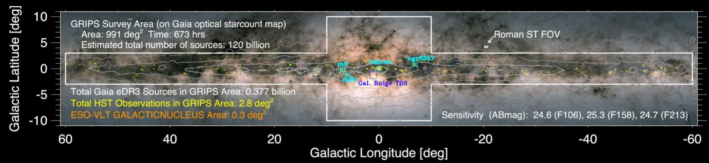

Future Research Plan
Westlake University
20 February 2025
Gregory M. Green
(Sofja Kovalevskaja Group Leader, MPIA, Heidelberg)

Computational methods
Milky Way Dynamics
Interstellar Medium
Computational Methods
Computational Methods
Machine-learning tools
Computational Methods
Machine-learning tools
+ physics / inference
Milky Way Dynamics
Milky Way Dynamics: Questions
Dark Matter
- substructure
- cusp / core
- local DM density
Baryons
- bar
- spiral arms

Milky Way Dynamics: Methods
$$ \Phi_{\mathrm{grav}}\left(\vec{r}\class{fragment}{,t}\right)^{ \class{fragment}{ \raise{7pt}{\nearrow} \raise{14pt}{+\left[ \mathrm{Fe/H} \right]} } }_{ \class{fragment}{ \raise{-7pt}{\searrow} \raise{-14pt}{\mathrm{external} \\ \mathrm{galaxies} \\ \hspace{0.5em}< 6\mathrm{D}} } } $$

Milky Way Dynamics: Data – Gaia

Gaia data will get even better
- DR3 (June 2022): 34 months of data.
- DR4 (late 2026): 66 months of data, many more raw spectra.
- DR5 (2030?): 120 months of data.
Error scalings with survey time:
$\sigma_{\varpi} \propto T^{-1/2}$. DR5 parallax errors ~50% of DR3.
$\sigma_{\mu} \propto T^{-3/2}$. DR5 proper-motion errors ~15% of DR3.
Milky Way Dynamics: Data – SDSS-V
Medium- and high-resolution spectroscopy of millions of stars in the Galactic Plane.

Milky Way Dynamics: Data – Roman
Galactic Roman Infrared Plane Survey (GRIPS)
1000 deg2, 120 billion sources, 3 photometric bands. + Proper motions?
The Interstellar Medium
The Interstellar Medium: Questions
Extinction curve: $A\left(\lambda, \ell, b\right)$
$$ \left. \begin{array}{c} \mathrm{grain\ size} \\ \mathrm{composition\ (PAH)} \end{array} \right\} = \underset{ \style{display:inline-block; transform:rotate(-150deg)}{ \class{fragment}{ \xrightarrow{\hspace{8em}} } } }{ f\left(I_{\ast}, \mathrm{history}\right) } \\[2.2em] \class{fragment}{ \begin{array}{c} \text{dust physics}\\[-0.3em] \text{in the MW} \end{array} } \class{fragment}{ \xrightarrow{\hspace{5em}} \text{dust at high $z$} } $$
The Interstellar Medium: Methods
ML + spectral modeling + 3D inversion

The Interstellar Medium: Data
Low-resolution spectra from the UV to the mid-IR